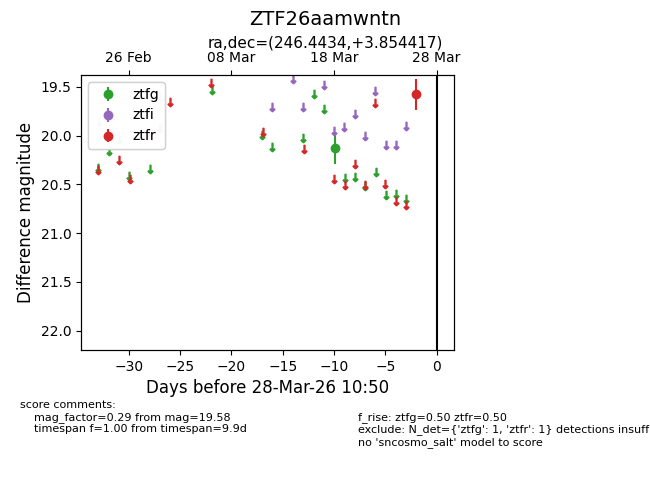
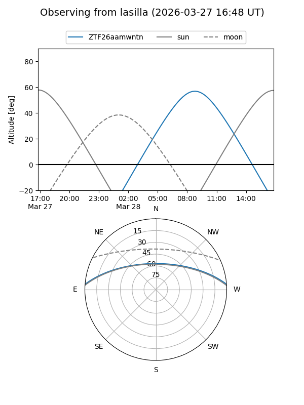
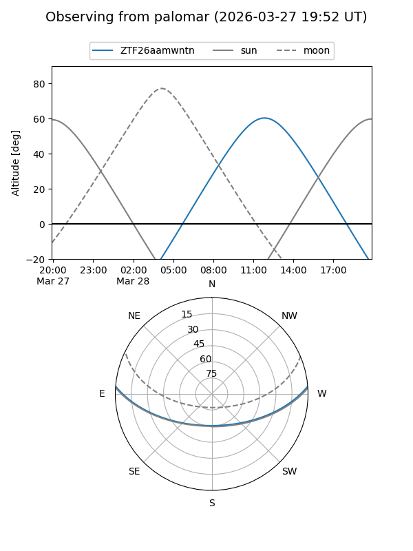

ZTF26aamwntn
Target ZTF26aamwntn at 2026-03-28 10:53
Aliases and brokers:
FINK: link
Lasair: link
ALeRCE: link
alt names
ZTF26aamwntn (ztf,fink_ztf)
Coordinates:
equatorial (ra, dec) = 246.4434,+3.85442
equatorial (HMS+DMS) = 16:25:46.41,+03:51:15.90
galactic (l, b) = (18.2576,+33.90336)
Flags:
Photometry:
last ztfg=20.13, ztfr=19.58
1 ztfg, 1 ztfr detections
Lightcurve

Visibility


Additional plots